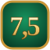

Le Cercle
Jeux en ligne entre amis

Le Cercle du 7,5
Le jeu de cartes « sept et demi » : approche 7,5 sans le dépasser et bats le banquier. De 2 à 8 joueurs.
Jouer →Trouve le pays
Quiz de géographie : un nom de pays s’affiche, clique dessus sur la carte du monde. 197 pays, 4 modes de jeu.
Jouer →Le Demi-Cercle
À deux : un thème, un mot, une aiguille entre MAUVAIS et BON. Devine où ton adversaire classe son mot. 68 thèmes, 10 manches.
Jouer →Bientôt
Un nouveau projet arrive ici.